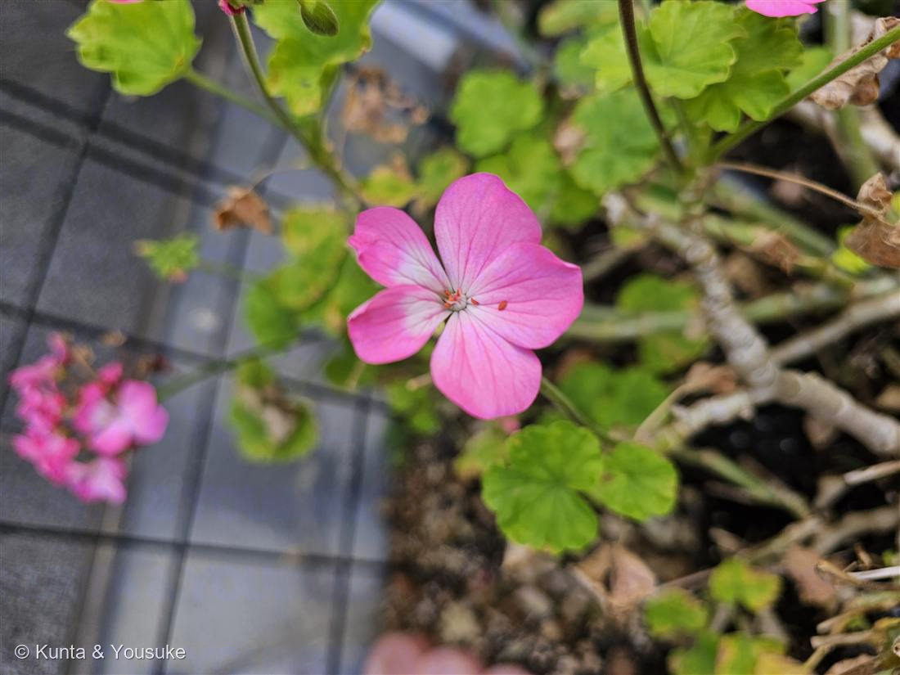
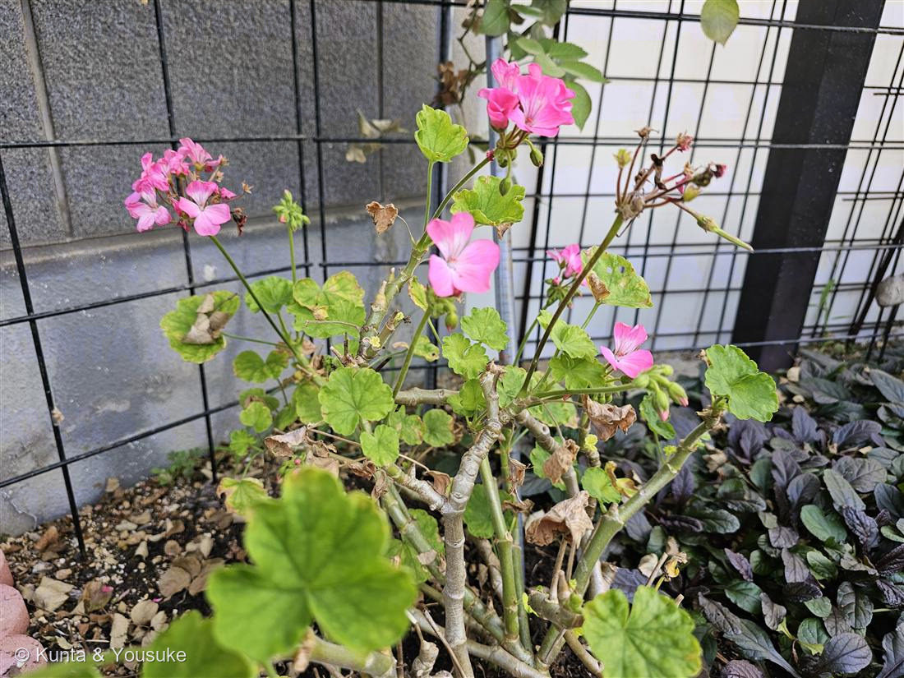

地図を読み込んでいるよ…
🔍 写真も地図も、押しているあいだ拡大して見られるよ（スマホは指を置いてすこし待ってね）。
🌍 の地図＝この子がもともと自生している場所を緑に。園芸交雑種。親になった原種（Pelargonium zonale など）は、南アフリカのケープ地方が原産。日本には観賞用として渡来し、鉢花・花壇でおなじみ。
⭐親になった原種は南アフリカ（ケープ地方）の原産。この子自体は園芸でつくられた交雑種（Pelargonium × hortorum）だよ。⚠日本は塗っていない——ゼラニウムは観賞用に育てられている外来の園芸植物で、日本はふるさとじゃない（港の花壇で咲いていた）。⭐暖かい気候の子で、霜に弱い。だから地図の緑は、寒くない南アフリカのケープあたりを指しているよ。
⚠ 地図は国（日本と中国だけ県・省）までしか塗れないから、ほんとうの分布より広く見えていることがあるよ。地図はだいたいの場所。正確なところは、上の文を見てね。
ゼラニウム
Pelargonium × hortorum
別名 · モンテンジクアオイ（紋天竺葵）／ゾーナル・ゼラニウム／ 原産 · 南アフリカ（原種）の園芸交雑種／ 見どころ · ⭐葉の馬蹄ゾーンと、鳥のくちばしの実
フウロソウ科 · Geraniaceae（テンジクアオイ属 Pelargonium）── 085アメリカフウロ・ゲンノショウコと同じ科
燻太さんの観察「葉っぱの形と模様も好き。果実がゲンノショウコそっくり、種を飛ばすのかな？」──どちらも大的中。模様は名前の「紋」に、実は属名「コウノトリのくちばし」になっていたよ。
名前と学名の由来 ── 「コウノトリのくちばし」と、鳥の名の三兄弟
- ⭐⭐属名 Pelargonium（ペラルゴニウム）は、ギリシャ語 pelargós＝「コウノトリ（鸛）」から。──実（果実）が細長い鳥のくちばし形をしているのを、コウノトリのくちばしに見立てた名前だよ。燻太さんが「ゲンノショウコそっくり」と気づいた、あの細長い実のことなんだ。
- ⭐⭐⭐フウロソウ科は「水辺の鳥のくちばし三兄弟」。──Geranium（ゲンノショウコ・フウロ）＝ゲラノス＝ツル（鶴）／Pelargonium（ゼラニウム）＝ペラルゴス＝コウノトリ（鸛）／Erodium（オランダフウロ）＝エロディオス＝サギ（鷺）。同じ形の実を、三種類の水鳥のくちばしに分けて名づけたんだ。
- ⭐和名「モンテンジクアオイ（紋天竺葵）」。──「テンジクアオイ」がテンジクアオイ属（Pelargonium）のこと、「紋（もん）」は、燻太さんが好きって言った、あの葉っぱの馬蹄形の模様のこと。好きになった模様が、そのまま名前になっているんだよ。
- ⭐園芸名「ゼラニウム」は、昔この仲間が Geranium（ゼラニウム）属に分類されていた名残。1789年に Pelargonium 属として分けられた後も、呼び名だけ「ゼラニウム」で定着したんだ。
- 種名 hortorum は「庭の・園芸の」（ラテン語 hortus＝庭）。この子が、園芸でつくられた交雑種だということを表しているよ。
この植物のこと
- フウロソウ科テンジクアオイ属の、低木のようになる多年草。085 アメリカフウロ、そして燻太さんの言うゲンノショウコと同じフウロソウ科の仲間だよ。
- ⭐⭐葉の「ゾーン（帯）」がこの子の目印。円くて浅く波打つ葉に、濃い赤茶〜こげ茶の馬蹄形（U字）の模様が入る。この模様があるタイプを「ゾーナル（zonal＝帯のある）ゼラニウム」と呼ぶ。燻太さんが好きになった模様が、そのまま園芸上の分類名になっているんだ。
- ⭐花は、枝先に散形状に集まって咲く（写真②）。一つの花をよく見ると、上の2枚と下の3枚で、わずかに左右相称（写真①）。これは、放射相称（どこから見ても同じ）の本物のフウロ（Geranium）と分ける手がかりだよ。
- ⭐茎は多肉質でぽってり。木のように立ち上がって、こんもりした株になる（写真②）。
- ⭐葉に独特の香りがあって、こすると匂う。この香りは虫を遠ざける働きがあるといわれ、園芸では「虫よけ」を期待して置かれることもある。
- 南アフリカのケープ地方の原種から生まれた園芸交雑種。暖かい気候の子だから、霜に弱い。日本では鉢花や花壇の定番で、暖かければ四季を通じてよく咲くよ。
⭐ 燻太さんの質問への答え ── 種は「弾く」か「ねじ込む」か
- 燻太さんの「この子も種を飛ばすの？」——答えは「うん、旅する。でも飛ばし方がゲンノショウコと違う」だよ。
- ゲンノショウコ（Geranium）は“カタパルト式”。実が乾くと、くちばしの部分が下からバネのように巻き上がって、種をパチンと弾き飛ばす。この巻き上がった姿が神輿の屋根に似ているから、別名「神輿草（みこしぐさ）」。
- ゼラニウム（Pelargonium）は“弾かない”。かわりに、種一粒ずつに羽毛のような尾がついていて、①乾くとパラシュートのように風に乗って飛ぶ／②その尾が湿り気で伸び縮みして、コルクの栓抜きのように種を土にねじ込む（自分で植わる）。弾き飛ばしではなく、風＋ドリル式なんだ。
- おなじ「鳥のくちばしの実」でも、“弾く”ゲンノショウコと、“ねじ込む”ゼラニウム。燻太さんが実の形で見抜いた仲間どうしが、種の飛ばし方でくっきり分かれているの。おまけにゲンノショウコを入れたから、いつか実の弾け方をくらべてみようね。
同定について ── ゼラニウム（Pelargonium）か、フウロ（Geranium）か
- ⭐円くて浅く波打つ葉＋濃い馬蹄形のゾーン＋多肉質の茎＋散形の花＋わずかに左右相称の花——この組み合わせは、園芸ゼラニウム（Pelargonium）ならでは。
- 本物のフウロ／ゲンノショウコ（Geranium）は、葉が手のひら状に深く裂け、花は放射相称、茎は草質。この子は葉が丸く浅く、花が左右相称で、茎が多肉——だから Pelargonium と分かる。
- 近い仲間に、葉がツタ状のアイビーゼラニウム、香りの強いニオイゼラニウム（センテッド）などもいる。この子は円い葉に馬蹄ゾーンの、いちばん基本のゾーナル系だよ。
参考：みんなの趣味の園芸「ゼラニウム（ゼラニューム）」（フウロソウ科テンジクアオイ属 Pelargonium・南アフリカ原産／ゾーナル系は葉に馬蹄形の斑（ゾーン）／半耐寒性で霜に弱い）／Abraham & Elbaum 2013, New Phytologist「Hygroscopic movements in Geraniaceae」・Scientific Reports「humidity-responsive Geraniaceae awns」（フウロソウ科の実は芒（awn）の吸湿運動で散布／Pelargoniumは羽毛状の芒で風散布＋らせん状に地面へねじ込む自己埋設、Geraniumは弾け飛ぶ、Erodiumはコルク栓抜き型）